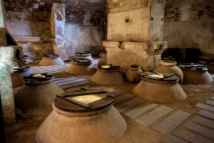
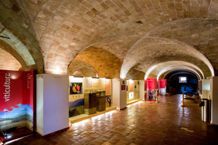
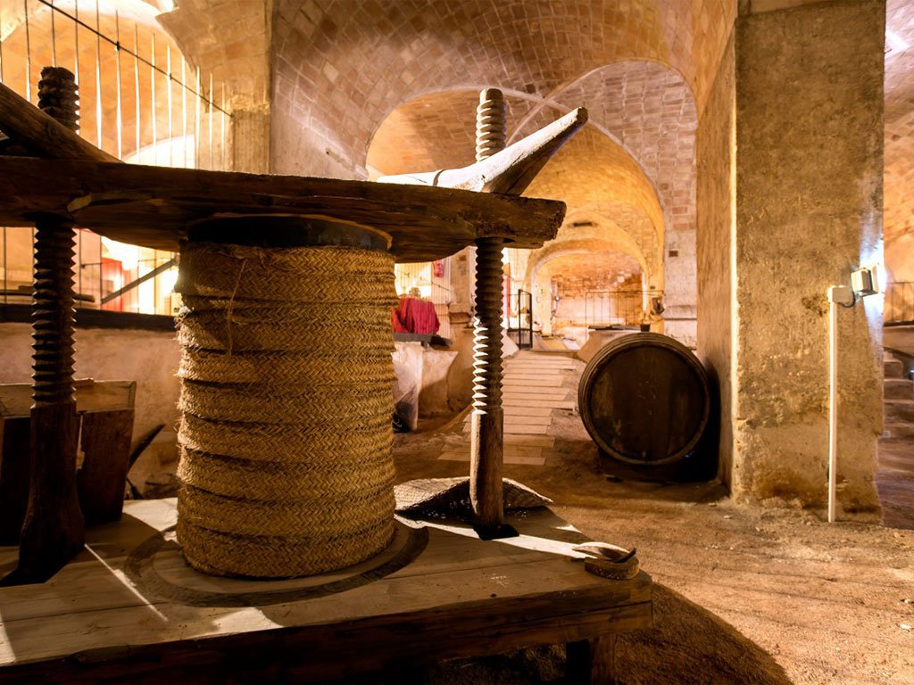

Museo del vino



Informacion
El Museo del Vino de Bullas está situado en una antigua bodega del siglo XIX que pertenecía a la familia Melgares de Aguilar. Su producción anual de la bodega era de unos 350.000 litros de vino, repartidos en 115 tinajas, lo que la hacía una de las de mayor tamaño y capacidad de toda Murcia.
En sus más de 1.400 m2 se muestran los procesos seguidos en torno a la elaboración del vino. La bodega conserva gran parte de de sus elementos originales, por lo que se convierte en el lugar ideal para ilustrar y dar a conocer de manera didáctica y amena toda la actividad vitivinícola, tanto actual como pasada, del área que abarca la Denominación de Origen Protegida "Bullas".
El Museo del Vino cuenta, además, con una sala de exposiciones temporales y una tienda en la que se pueden adquirir los diferentes vinos producidos en el territorio
Volver al inicio